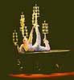
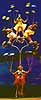

|
Written by Al Wong
(Write to me)
This is my experience in Beijing, China in the Summer of 1999. If you came to this webpage first, it's better if you start from the beginning of the story.
I might as well put in a plug for my webpage here as it is on-line
already. It is my personal experience about this trip to China.
The URL is:
I originally intended to update this webpage everyday
during my trip but
the Internet connection here at the language academy
is slow and unreliable. To update my webpage,
I have to take a taxi cab to a local cyber cafe and do it there.
Also, I can only do this during my free time.
So I try to update this webpage at least weekly.
Hey, my laundry came back today! It only them took four
days again
for the turnaround. The turnaround time for the laundry service
is supposedly
one day. I guess I should be glad
I got my laundry back at all. Guess what? I already have another
load of laundry to submit to the laundry service again.
Hopefully, I'll get it back before leaving for Xi'an
the week after next.
They still haven't fixed my toilet yet.
There is a leak around the seal on the floor.
I've had this leak for over a week.
This comedy continues.
Today's activities include:
When the temple finally opened we had a tour guide
show us around for about an hour. I couldn't understand
some of what she was saying because her English
was not very good.
Yonghe Gong is a working
Buddhist temple where people come to pray.
As I was looking around, it seemed to me this temple
was a zoo with people trying to pray/worship in the
middle of these
tour groups going by every few minutes. It seemed
like a mockery of the Buddhist religion to me.
How would you feel during church services having tour
groups going by, talking and snapping pictures?
According to Cathy, this is acceptable here and
there is no disrespect intended. I'll take her word for it.
The temple itself is your typical temple with incense burning,
people praying and bells ringing. They had a couple of interesting
Buddha statues in the pray halls, one a sitting Buddha and the
other a giant standing Buddha.
I am glad we didn't walk around too
much because now both
my knees were still hurting from yesterday's
walk in Behai park and last night's dancing at NASA.
Yes, I'm paying for it now.
For some reason, some of my classmates took off for over 30 minutes
during a break period which is supposed to be only 10 minutes.
The teacher got peeved.


I picked up some postcards about this show and plan on mailing
some of them out. These postcards are great!
The show lasted about 2 hours and costs $150.00RMB. A bargain
for a similar show in the USA. I plan on seeing it again!
|